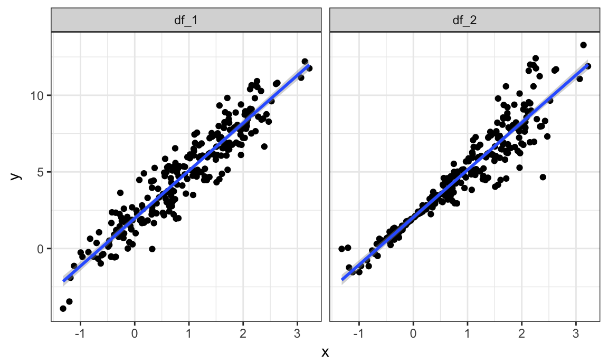
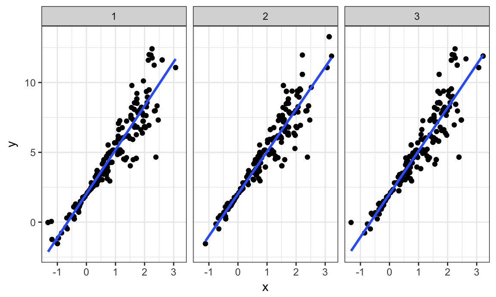
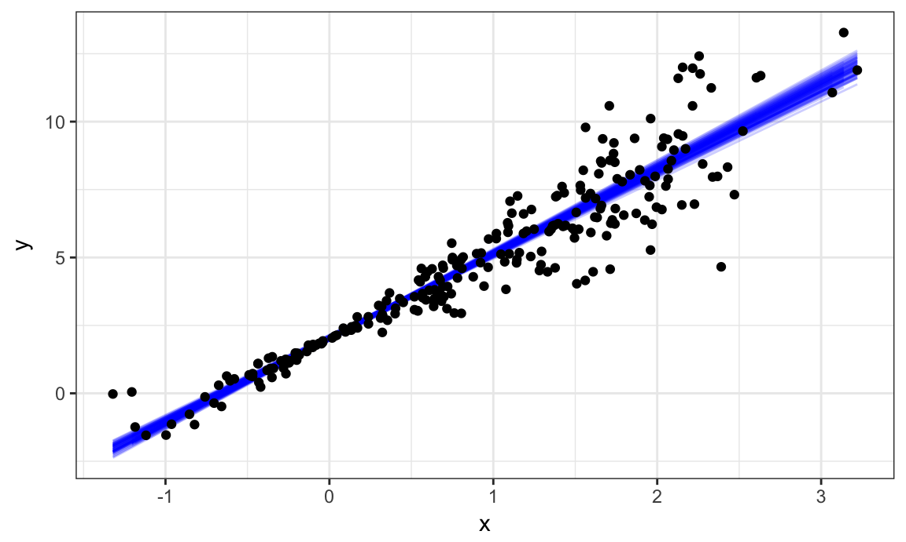

R’s data structures, especially data frames, are surprisingly flexible. This is useful when the “observations” you want to store become more complex than single values; for example, each row many contain a few scalar observations as well a complete data set. In these cases, list columns are an appropriate column type, and map functions provide a way to interact with those columns.
Bootstrapping is a popular resampling-based approach to statistical inference, and is helpful when usual statistical methods are intractable or inappropriate. The idea is to draw repeated samples from your original sample with replacement, thereby approximating the repeated sampling framework. Using list columns to store bootstrap samples is natural and provides a “tidy” approach to resampling-based inference.
This is the third module in the Iteration topic; the relevant slack channel is here.
I’ll write code for today’s content in a new R Markdown document called listcols_and_bootstrapping.Rmd in the example_iteration directory / repo. The code chunk below loads the usual packages.
library(tidyverse)
## Warning: package 'tidyverse' was built under R version 3.4.2
## ── Attaching packages ──────────────────────────────────────────────────────── tidyverse 1.2.0 ──
## ✔ ggplot2 2.2.1 ✔ purrr 0.2.3
## ✔ tibble 1.3.4 ✔ dplyr 0.7.3
## ✔ tidyr 0.7.1 ✔ stringr 1.2.0
## ✔ readr 1.1.1 ✔ forcats 0.2.0
## ── Conflicts ─────────────────────────────────────────────────────────── tidyverse_conflicts() ──
## ✖ dplyr::filter() masks stats::filter()
## ✖ dplyr::lag() masks stats::lag()
theme_set(theme_bw())
theme_update(legend.position = "bottom")Things are gonna get a little weird.
Remember the weather data?
library(rnoaa)
weather =
meteo_pull_monitors(c("USW00094728", "USC00519397", "USS0023B17S"),
var = c("PRCP", "TMIN", "TMAX"),
date_min = "2016-01-01",
date_max = "2016-12-31") %>%
mutate(
name = recode(id, USW00094728 = "CentralPark_NY",
USC00519397 = "Waikiki_HA",
USS0023B17S = "Waterhole_WA"),
tmin = tmin / 10,
tmax = tmax / 10) %>%
select(name, id, everything())The station name and id are constant across remaining observations. For that reason, we could organize a new DF with three rows – one for each station – and a column that includes everything else. This is what the nest function does.
weather =
nest(weather, date:tmin)
weather
## # A tibble: 3 x 3
## name id data
## <chr> <chr> <list>
## 1 CentralPark_NY USW00094728 <tibble [366 x 4]>
## 2 Waikiki_HA USC00519397 <tibble [366 x 4]>
## 3 Waterhole_WA USS0023B17S <tibble [366 x 4]>The data column is a list column – on it’s own, it’s a list. This is similar to the name column being a character column, becuase it contains a character vector.
Inpecting the data column gives an idea of what’s going on.
weather$data
## [[1]]
## # A tibble: 366 x 4
## date prcp tmax tmin
## <date> <dbl> <dbl> <dbl>
## 1 2016-01-01 0 5.6 1.1
## 2 2016-01-02 0 4.4 0.0
## 3 2016-01-03 0 7.2 1.7
## 4 2016-01-04 0 2.2 -9.9
## 5 2016-01-05 0 -1.6 -11.6
## 6 2016-01-06 0 5.0 -3.8
## 7 2016-01-07 0 7.8 -0.5
## 8 2016-01-08 0 7.8 -0.5
## 9 2016-01-09 0 8.3 4.4
## 10 2016-01-10 457 15.0 4.4
## # ... with 356 more rows
##
## [[2]]
## # A tibble: 366 x 4
## date prcp tmax tmin
## <date> <dbl> <dbl> <dbl>
## 1 2016-01-01 0 29.4 16.7
## 2 2016-01-02 0 28.3 16.7
## 3 2016-01-03 0 28.3 16.7
## 4 2016-01-04 0 28.3 16.1
## 5 2016-01-05 0 27.2 16.7
## 6 2016-01-06 0 27.2 20.0
## 7 2016-01-07 46 27.8 18.3
## 8 2016-01-08 3 28.3 17.8
## 9 2016-01-09 8 27.8 19.4
## 10 2016-01-10 3 28.3 18.3
## # ... with 356 more rows
##
## [[3]]
## # A tibble: 366 x 4
## date prcp tmax tmin
## <date> <dbl> <dbl> <dbl>
## 1 2016-01-01 0 1.7 -5.9
## 2 2016-01-02 25 -0.1 -6.0
## 3 2016-01-03 0 -5.0 -10.0
## 4 2016-01-04 25 0.3 -9.8
## 5 2016-01-05 25 1.9 -1.8
## 6 2016-01-06 25 1.4 -2.6
## 7 2016-01-07 0 1.4 -3.9
## 8 2016-01-08 0 1.1 -4.0
## 9 2016-01-09 0 1.4 -4.5
## 10 2016-01-10 0 2.3 -3.8
## # ... with 356 more rowsWe can also access specific entries in the list column, which (in this case) are data frames.
weather$data[[1]]
## # A tibble: 366 x 4
## date prcp tmax tmin
## <date> <dbl> <dbl> <dbl>
## 1 2016-01-01 0 5.6 1.1
## 2 2016-01-02 0 4.4 0.0
## 3 2016-01-03 0 7.2 1.7
## 4 2016-01-04 0 2.2 -9.9
## 5 2016-01-05 0 -1.6 -11.6
## 6 2016-01-06 0 5.0 -3.8
## 7 2016-01-07 0 7.8 -0.5
## 8 2016-01-08 0 7.8 -0.5
## 9 2016-01-09 0 8.3 4.4
## 10 2016-01-10 457 15.0 4.4
## # ... with 356 more rowsNesting columns can help with data organization / understanding by masking stuff you’re less concerned about right now and clarifying the things you are concerned about. It also simplifies the use of analytic approaches across levels of a higher variable.
Also possible to reverse if your list col is contains data frames.
unnest(weather)
## # A tibble: 1,098 x 6
## name id date prcp tmax tmin
## <chr> <chr> <date> <dbl> <dbl> <dbl>
## 1 CentralPark_NY USW00094728 2016-01-01 0 5.6 1.1
## 2 CentralPark_NY USW00094728 2016-01-02 0 4.4 0.0
## 3 CentralPark_NY USW00094728 2016-01-03 0 7.2 1.7
## 4 CentralPark_NY USW00094728 2016-01-04 0 2.2 -9.9
## 5 CentralPark_NY USW00094728 2016-01-05 0 -1.6 -11.6
## 6 CentralPark_NY USW00094728 2016-01-06 0 5.0 -3.8
## 7 CentralPark_NY USW00094728 2016-01-07 0 7.8 -0.5
## 8 CentralPark_NY USW00094728 2016-01-08 0 7.8 -0.5
## 9 CentralPark_NY USW00094728 2016-01-09 0 8.3 4.4
## 10 CentralPark_NY USW00094728 2016-01-10 457 15.0 4.4
## # ... with 1,088 more rowsIt would be great to be able to manipulate list columns, but usual operations (like mean or recode) often don’t apply to the entries in a list column.
write a quick function
weather_lm = function(df) {
lm(tmax ~ tmin, data = df)
}try it on one df
weather_lm(weather$data[[1]])
##
## Call:
## lm(formula = tmax ~ tmin, data = df)
##
## Coefficients:
## (Intercept) tmin
## 7.779 1.045use map to apply it everywhere
map(weather$data, weather_lm)
## [[1]]
##
## Call:
## lm(formula = tmax ~ tmin, data = df)
##
## Coefficients:
## (Intercept) tmin
## 7.779 1.045
##
##
## [[2]]
##
## Call:
## lm(formula = tmax ~ tmin, data = df)
##
## Coefficients:
## (Intercept) tmin
## 22.489 0.326
##
##
## [[3]]
##
## Call:
## lm(formula = tmax ~ tmin, data = df)
##
## Coefficients:
## (Intercept) tmin
## 6.851 1.245note you can use an “anonymous” function using map’s syntax.
map(weather$data, ~lm(tmax ~ tmin, data = .x))
## [[1]]
##
## Call:
## lm(formula = tmax ~ tmin, data = .x)
##
## Coefficients:
## (Intercept) tmin
## 7.779 1.045
##
##
## [[2]]
##
## Call:
## lm(formula = tmax ~ tmin, data = .x)
##
## Coefficients:
## (Intercept) tmin
## 22.489 0.326
##
##
## [[3]]
##
## Call:
## lm(formula = tmax ~ tmin, data = .x)
##
## Coefficients:
## (Intercept) tmin
## 6.851 1.245result of map is a list; can store results as a new list column.
weather =
weather %>%
mutate(models = map(data, weather_lm))
weather
## # A tibble: 3 x 4
## name id data models
## <chr> <chr> <list> <list>
## 1 CentralPark_NY USW00094728 <tibble [366 x 4]> <S3: lm>
## 2 Waikiki_HA USC00519397 <tibble [366 x 4]> <S3: lm>
## 3 Waterhole_WA USS0023B17S <tibble [366 x 4]> <S3: lm>this is great! keeps track of everything
what about other things – summarizing, for example. that’s easy with broom::tidy. that produces a df; let’s look at a quick example.
lm(tmax ~ tmin, data = weather$data[[1]]) %>%
broom::tidy()
## term estimate std.error statistic p.value
## 1 (Intercept) 7.779171 0.22116552 35.17352 3.883698e-119
## 2 tmin 1.044830 0.01638279 63.77608 1.229687e-199we can remove other stuff then unnest. since tidy produces a data frame, unnesting this gives nicely-structured output.
weather =
weather %>%
mutate(results = map(models, broom::tidy)) %>%
select(-data, -models) %>%
unnest()
weather
## # A tibble: 6 x 7
## name id term estimate std.error statistic
## <chr> <chr> <chr> <dbl> <dbl> <dbl>
## 1 CentralPark_NY USW00094728 (Intercept) 7.7791711 0.22116552 35.17352
## 2 CentralPark_NY USW00094728 tmin 1.0448303 0.01638279 63.77608
## 3 Waikiki_HA USC00519397 (Intercept) 22.4887437 0.54052668 41.60524
## 4 Waikiki_HA USC00519397 tmin 0.3259609 0.02477356 13.15761
## 5 Waterhole_WA USS0023B17S (Intercept) 6.8507057 0.14323379 47.82884
## 6 Waterhole_WA USS0023B17S tmin 1.2448124 0.02864309 43.45942
## # ... with 1 more variables: p.value <dbl>This is really handy!!
Note that this isn’t, generally speaking, the right way to analyze data like these. We have datasets nested within stations – for that kind of data, a hierarchical / random effects model is more appropriate. But this is a quick and easy way to get useful answers in an exploratory way.
same process but faster
Why bootstrap
simulate data coming from a model with increasing variance
set.seed(10)
n_samp = 250
df_1 = tibble(
x = rnorm(n_samp, 1, 1),
error = rnorm(n_samp, 0, 1),
y = 2 + 3 * x + error
)
df_2 = df_1 %>%
mutate(
error = error * .75 * x,
y = 2 + 3 * x + error
)
bind_rows(
mutate(df_1, data = "df_1"),
mutate(df_2, data = "df_2")
) %>%
ggplot(aes(x = x, y = y)) +
geom_point() +
stat_smooth(method = "lm") +
facet_grid(~data) 
lm(y ~ x, data = df_1) %>% summary()
##
## Call:
## lm(formula = y ~ x, data = df_1)
##
## Residuals:
## Min 1Q Median 3Q Max
## -3.00497 -0.75408 -0.05951 0.80840 2.54356
##
## Coefficients:
## Estimate Std. Error t value Pr(>|t|)
## (Intercept) 1.96777 0.09435 20.86 <2e-16 ***
## x 3.11086 0.07193 43.24 <2e-16 ***
## ---
## Signif. codes: 0 '***' 0.001 '**' 0.01 '*' 0.05 '.' 0.1 ' ' 1
##
## Residual standard error: 1.075 on 248 degrees of freedom
## Multiple R-squared: 0.8829, Adjusted R-squared: 0.8824
## F-statistic: 1870 on 1 and 248 DF, p-value: < 2.2e-16
lm(y ~ x, data = df_2) %>% summary()
##
## Call:
## lm(formula = y ~ x, data = df_2)
##
## Residuals:
## Min 1Q Median 3Q Max
## -4.7759 -0.4854 -0.0520 0.4214 3.3971
##
## Coefficients:
## Estimate Std. Error t value Pr(>|t|)
## (Intercept) 2.03488 0.09267 21.96 <2e-16 ***
## x 3.09472 0.07066 43.80 <2e-16 ***
## ---
## Signif. codes: 0 '***' 0.001 '**' 0.01 '*' 0.05 '.' 0.1 ' ' 1
##
## Residual standard error: 1.056 on 248 degrees of freedom
## Multiple R-squared: 0.8855, Adjusted R-squared: 0.8851
## F-statistic: 1918 on 1 and 248 DF, p-value: < 2.2e-16point out that OLS estimates will understate variance.
bootstrapping can help here (note: WLS would also work, and might be better).
write a function to do resampling from the population.
boot_sample = function(df) {
sample_frac(df, replace = TRUE)
}
boot_straps = data_frame(
strap_number = 1:100,
strap_sample = rerun(100, boot_sample(df_2))
)
boot_straps
## # A tibble: 100 x 2
## strap_number strap_sample
## <int> <list>
## 1 1 <tibble [250 x 3]>
## 2 2 <tibble [250 x 3]>
## 3 3 <tibble [250 x 3]>
## 4 4 <tibble [250 x 3]>
## 5 5 <tibble [250 x 3]>
## 6 6 <tibble [250 x 3]>
## 7 7 <tibble [250 x 3]>
## 8 8 <tibble [250 x 3]>
## 9 9 <tibble [250 x 3]>
## 10 10 <tibble [250 x 3]>
## # ... with 90 more rowssome quick checks
boot_straps %>%
mutate(mean_y = map_dbl(.x = strap_sample, ~mean(.x$y) ) )
## # A tibble: 100 x 3
## strap_number strap_sample mean_y
## <int> <list> <dbl>
## 1 1 <tibble [250 x 3]> 4.549890
## 2 2 <tibble [250 x 3]> 4.942721
## 3 3 <tibble [250 x 3]> 4.960889
## 4 4 <tibble [250 x 3]> 5.167353
## 5 5 <tibble [250 x 3]> 4.866360
## 6 6 <tibble [250 x 3]> 4.671315
## 7 7 <tibble [250 x 3]> 4.927128
## 8 8 <tibble [250 x 3]> 5.112649
## 9 9 <tibble [250 x 3]> 4.870607
## 10 10 <tibble [250 x 3]> 5.005710
## # ... with 90 more rows
boot_straps %>%
filter(strap_number %in% 1:3) %>%
unnest() %>%
ggplot(aes(x = x, y = y)) +
geom_point() +
stat_smooth(method = "lm", se = FALSE) +
facet_grid(~strap_number) 
fit models; extract results
boot_straps %>%
mutate(models = map(strap_sample, ~lm(y ~ x, data = .x) ),
results = map(models, broom::tidy)) %>%
select(-strap_sample, -models) %>%
unnest() %>%
group_by(term) %>%
summarize(boot_se = sd(estimate))
## # A tibble: 2 x 2
## term boot_se
## <chr> <dbl>
## 1 (Intercept) 0.05081553
## 2 x 0.08546541make some plots
boot_straps %>%
unnest() %>%
ggplot(aes(x = x, y = y)) +
geom_line(aes(group = strap_number), stat = "smooth", method = "lm", se = FALSE, alpha = .2, color = "blue") +
geom_point(data = df_2)
bootstrapShow how this works using bootstrap()
library(modelr)
boot_straps =
df_2 %>%
bootstrap(n = 100)
boot_straps$strap[[1]]
## <resample [250 x 3]> 38, 7, 123, 166, 194, 101, 41, 239, 22, 246, ...
as_data_frame(boot_straps$strap[[1]])
## # A tibble: 250 x 3
## x error y
## <dbl> <dbl> <dbl>
## 1 -0.7590868 0.14649877 -0.1307615
## 2 -0.2080762 0.10805601 1.4838275
## 3 0.9682603 -0.26555346 4.6392273
## 4 0.3226807 -0.72637797 2.2416641
## 5 -0.2770572 -0.05697992 1.1118483
## 6 0.2381957 -0.15842178 2.5561652
## 7 2.0865514 0.30215294 8.5618071
## 8 -0.1280560 0.15524447 1.7710765
## 9 -1.1852868 0.31634043 -1.2395201
## 10 0.8774499 -0.34412071 4.2882289
## # ... with 240 more rows
df_2 %>%
bootstrap(n = 100) %>%
mutate(models = map(strap, ~lm(y ~ x, data = .x) ),
results = map(models, broom::tidy)) %>%
select(-strap, -models) %>%
unnest() %>%
group_by(term) %>%
summarize(boot_se = sd(estimate))
## # A tibble: 2 x 2
## term boot_se
## <chr> <dbl>
## 1 (Intercept) 0.05305057
## 2 x 0.08127121The code that I produced working examples in lecture is here.